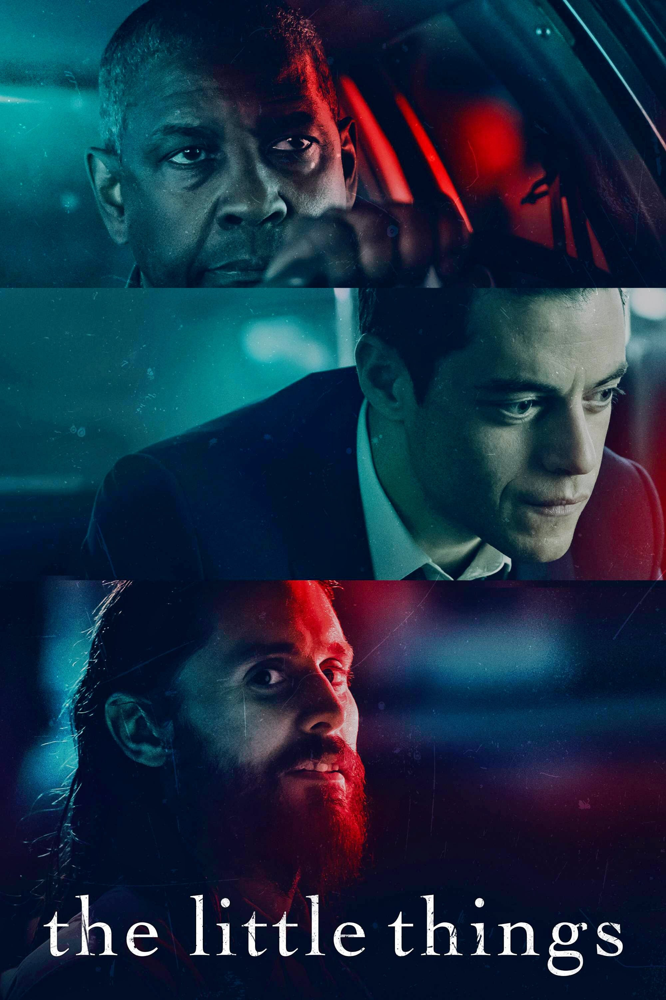

Reeling from the unexpected death of her husband, Beth (Rebecca Hall) is left alone in the lakeside home he built for her. She tries as best as she can to keep it together - but then nightmares come. Disturbing visions of a presence in the house calling to her, beckoning her with a ghostly allure. Against the advice of her friends, she begins digging into her husband's belongings, yearning for answers. What she finds are secrets both strange and disturbing - a mystery she's determined to unravel.
Promising Young Woman
Star Rating
Everyone said Cassie (Carey Mulligan) was a promising young woman... until a mysterious event abruptly derailed her future. But nothing in Cassie’s life is what it appears to be: she’s wickedly smart, tantalizingly cunning, and she’s living a secret double life by night. Now, an unexpected encounter is about to give Cassie a chance to right the wrongs of the past in this thrilling and wildly entertaining story.
>
Son
Star Rating
After a mysterious group of individuals breaks into Laura’s home and attempts to abduct her eight-year-old son, David, the two of them flee town in search of safety. But soon after the failed kidnapping, David becomes extremely ill, suffering from increasingly sporadic psychosis and convulsions. Following her maternal instincts to save him, Laura commits unspeakable acts to keep him alive, but soon she must decide how far she is willing to go to save her son.
The Little Things

Star Rating
Emmy winner Bob Odenkirk (Better Call Saul, The Post, Nebraska) stars as Hutch Mansell, an underestimated and overlooked dad and husband, taking life’s indignities on the chin and never pushing back. A nobody. When two thieves break into his suburban home one night, Hutch declines to defend himself or his family, hoping to prevent serious violence. His teenage son, Blake (Gage Munroe, The Shack), is disappointed in him and his wife, Becca (Connie Nielsen, Wonder Woman), seems to pull only further away.The aftermath of the incident strikes a match to Hutch’s long-simmering rage, triggering dormant instincts and propelling him on a brutal path that will surface dark secrets and lethal skills. In a barrage of fists, gunfire and squealing tires, Hutch must save his family from a dangerous adversary (famed Russian actor Aleksey Serebryakov, Amazon’s McMafia)—and ensure that he will never be underestimated as a nobody again.
Nobody
Star Rating
In Carthage, Mo., former New York-based writer Nick Dunne (Ben Affleck) and his glamorous wife Amy (Rosamund Pike) present a portrait of a blissful marriage to the public. However, when Amy goes missing on the couple's fifth wedding anniversary, Nick becomes the prime suspect in her disappearance. The resulting police pressure and media frenzy cause the Dunnes' image of a happy union to crumble, leading to tantalizing questions about who Nick and Amy truly are.
I Care A Lot
Star Rating
Poised with sharklike self-assurance, Marla Grayson is a professional, court-appointed guardian for dozens of elderly wards whose assets she seizes and cunningly bilks through dubious but legal means. It's a well-oiled racket that Marla and her business-partner and lover, Fran, use with brutal efficiency on their latest "cherry," Jennifer Peterson - a wealthy retiree with no living heirs or family. But when their mark turns out to have an equally shady secret of her own and connections to a volatile gangster, Marla is forced to level up in a game only predators can play - one that's neither fair, nor square.
A Quiet Place Part 2
Star Rating
Following the deadly events at home, the Abbott family (Emily Blunt, Millicent Simmonds, Noah Jupe) must now face the terrors of the outside world as they continue their fight for survival in silence. Forced to venture into the unknown, they quickly realize that the creatures that hunt by sound are not the only threats that lurk beyond the sand path.
The Mauritanian
Star Rating
A man imprisoned in Guantanamo Bay without trial finds allies in a defence attorney and her associate.
Cherry
Star Rating
EIn an epic odyssey of romance, war, drug addiction, and crime, a young man (Tom Holland) struggles to find his place in the world.
Lucky
Star Rating
Life takes a sudden turn for May (Brea Grant, After Midnight), a popular self-help book author, when she finds herself the target of a mysterious man with murderous intentions. Every night, without fail he comes after her, and every day the people around her barely seem to notice. With no one to t urn to, May is pushed to her limits and must take matters into her own hands to survive and to regain control of her life.